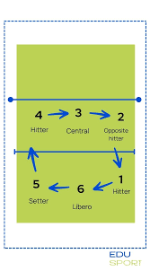

El voleibol se juega entre dos equipos de seis jugadores, cuyo objetivo es enviar el balón por encima de la red al campo contrario, evitando que toque el suelo propio. Se permiten máximo tres toques por equipo (sin contar el bloqueo) y un mismo jugador no puede golpear dos veces consecutivas. Los partidos se juegan al mejor de 5 sets, ganando el primero en llegar a 25 puntos con ventaja de dos.
¿De a cuantos se juega
Se puede jugar de a seis jugadores por equipo ademas de existir posiciones de voley: Punta, Armador, Central, Libero y Opuesto
